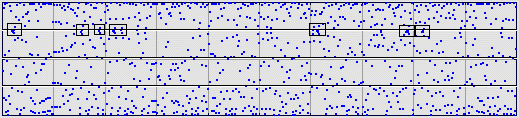
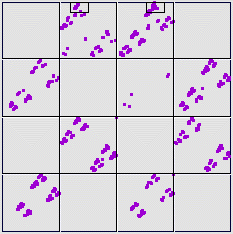

|  |
What about the clumps (outlined in boxes) along the bin 3 - bin 4 boundary?
| To understand this, suppose we applied T3 and T4 infinitely many times in succession. | ||||||||
| Suppose we start with the point |
||||||||
|
||||||||
| The left column converges to a point |
||||||||
| The right column to |
What can we say about these points?
First, observe T4(x1, y1) has address
4(34)infinity = 4(34)(34)(34)(34)... = (43)(43)(43)... = (43)infinity
That is, T4(x1, y1) = (x2, y2).
A similar argument shows T3(x2, y2) = (x1, y1).
Combining these observations, we see
T3T4(x1, y1) = (x1, y1) and T4T3(x2, y2) = (x2, y2)
The first of these gives the equations
(1/2)(x1/2 + 1/2) = x1 and (1/2)(y1/2 + 1/2) + 1/2 = y1
Consequently,
If the alternation between T3 and T4 is repeated for a while, but not forever,
the driven IFS should contain two sequences of points, one approaching
|  |
Return to Equal-Size Bin Sample.